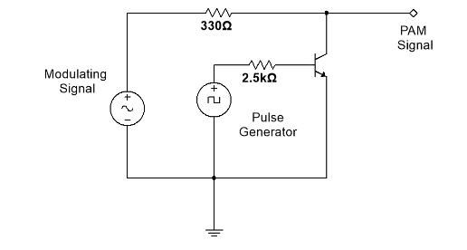

PULSE AMPLITUDE MODULATION

Modulating Signal
Pulse Amplitude Modulated Signal
PULSE SIGNAL
 Modulating Signal Pulse Amplitude Modulated Signal PULSE SIGNAL Modulating Signal Pulse Amplitude Modulated Signal PULSE SIGNAL
Modulating Signal Pulse Amplitude Modulated Signal PULSE SIGNAL Modulating Signal Pulse Amplitude Modulated Signal PULSE SIGNAL